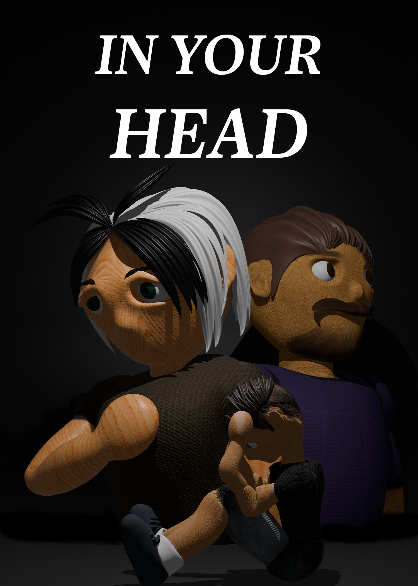
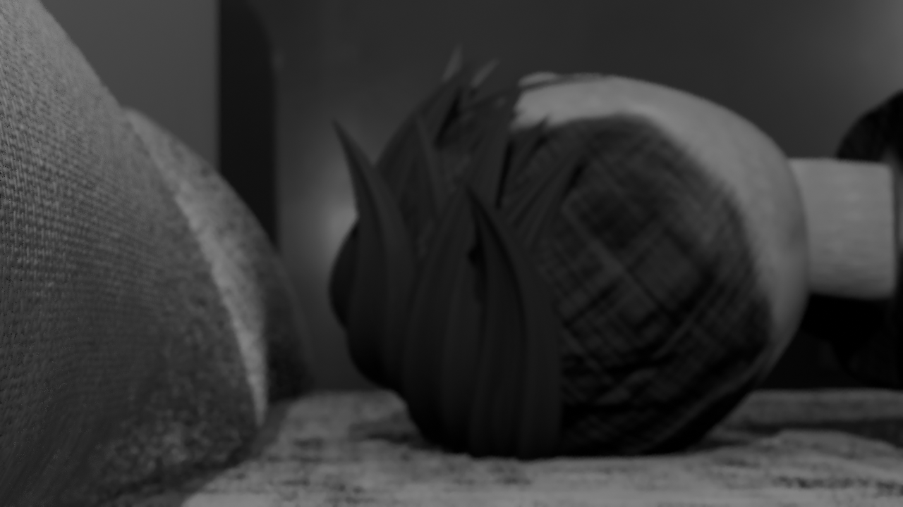
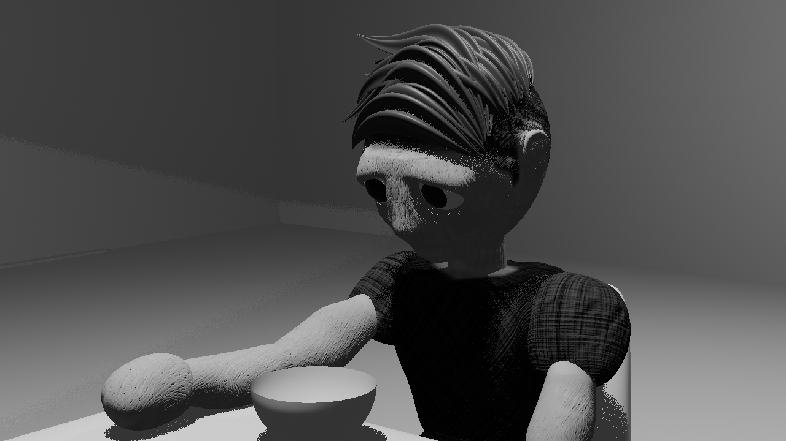
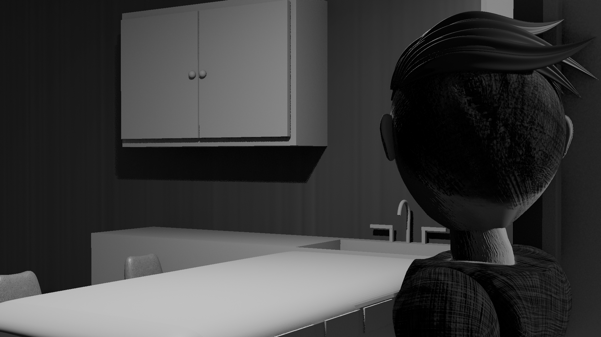
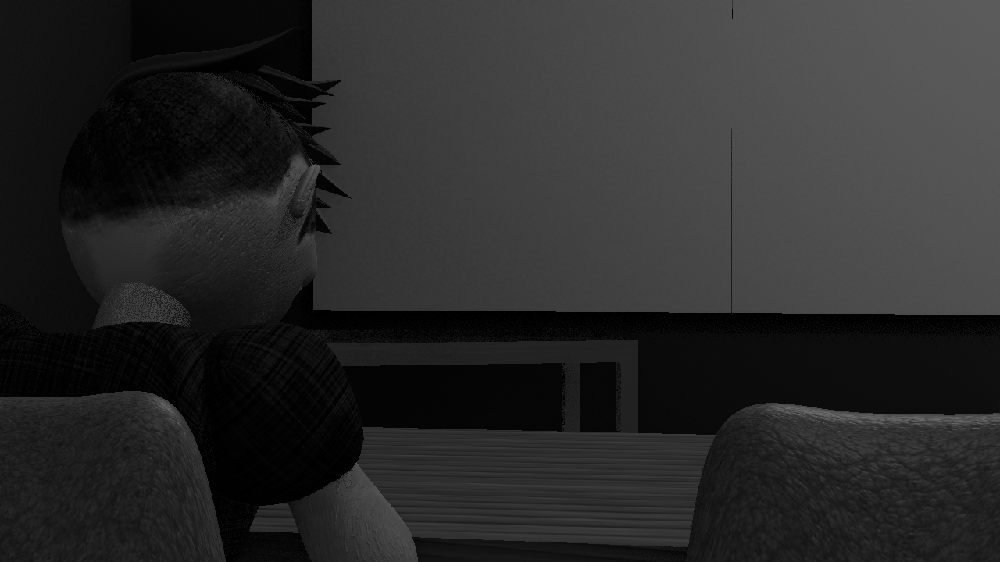
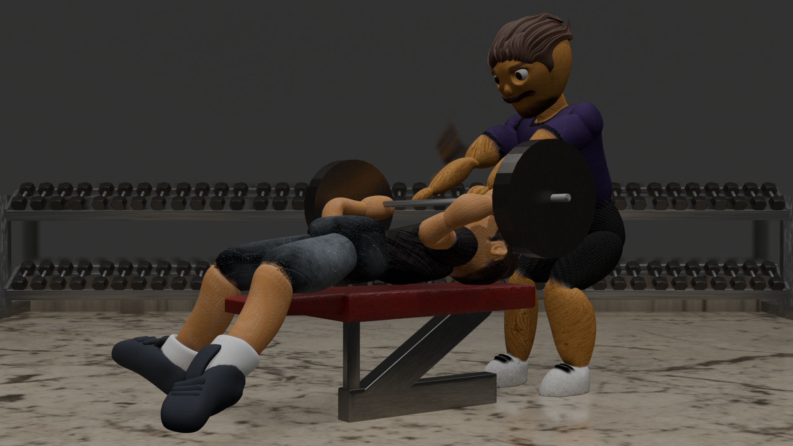

JULIAN CABADAS
( HE/HIM )
Portfolio: LINK
About the Artist
Julian Cabadas is a 3D model animator and graphic designer for marketing. Through the course of his life going through college, university and work spaces, he found his appreciation and love for art when he was going through multiple projects both assigned and personal, it made him truly feel like he had something he can lean onto when he felt like he needed to tell a story. Julian's practice in 3D modeling started back in 2022 when he first discovered Blender and all the wonders it can do, leading into frame animations that can create stories that he wants. Marketing started when he had his first internship, leaning himself into learning the adobe suite programs, while thinking outside the box of the trends and seeing what he can create with his own creativity. Marketing is like 3D modeling and animating to Julian, his passion came from creating a foundation of ideas and setting them out to create stories, and that has always been his goal, to create stories people can relate to, while having a creative art style that is unique to him. This foundation of storytelling started when Julian was 4 years old, creating comic books with a pencil, colored crayons, white paper and staples, trying to see what he can come up with while in recess and see where his imagination takes him. Julian's work feels like it adapts to today's workflow on creating standard models and marketing strategies, but he feels like he takes a lot of inspiration from his past work and hobbies that he used to love and adapts them into something he can feel proud of.
In Your Head
My work feels like it's a combination of my love for the internet and how I go through my life, trying to find interesting days and times of what I have done, or what I have to tell. The medium I work with is 3D modeling and graphic design, and I incorporate life stories and experiences within that medium. This work is related to how I grew up around technology and how I try to learn a new program every time there is something that interests me, like Blender and Adobe Suite. Animations and marketing were my foundation when I found out about Pixar and how they promote and create their own works, specifically works from Bud Luckey. Creating characters from animations like Toy Story and The Incredibles, his style and creative mindset on making characters how they should look so they fit the narrative of the plot, has always been the biggest inspiration to me. From that inspiration, that's when San Jose State University has taught me a lot from using Blender and Adobe Suite programs, learning new tools I have never seen before or updated tools that change the way you can create in those programs. The Art department in San Jose State University has taught me a lot about patience and always believing in the work you want to create. I do 3D modeling and Marketing as a hobby and passion of mine because I feel like I can be me, I can create worlds and scenarios that possibly haven't been made yet and I want to see how far I can take my limits and be satisfied with every iteration of work that I do, I want to be able to tell stories and share them.





